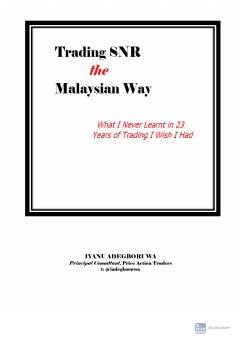

TSMalayziya uslubidagi SNR darajalari va narx harakati tahlili bo'yicha amaliy qo'llanma.
Ushbu qo'llanma treydingda narx harakati (price action) va Malayziya uslubidagi SNR (Support and Resistance) darajalarini tushunishga qaratilgan. Muallif bozor manipulyatsiyalari, shamchalar tahlili va treyding strategiyalarini amaliy misollar bilan tushuntirib beradi.